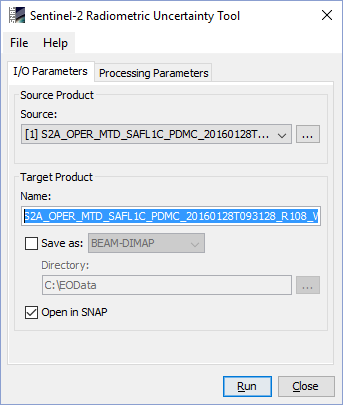
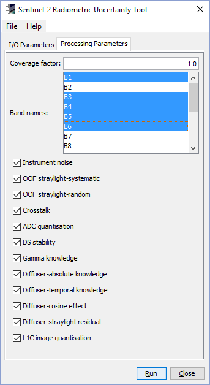

| S3-OLCI-RUT Processor Documentation | |
The S3-OLCI-RUT processor can be invoked in the Sentinel Toolbox from the menu by selecting
Optical->Preprocessing->Sentinel-3 OLCI Radiometric Uncertainty Tool.
On the command line processor is available by means of the Graph Processing Tool gpt
which is located in the Sentinel Toolbox bin directory.
Typing gpt S3OLCIRut -h displays further information.
Selecting the Sentinel-3 OLCI Radiometric Uncertainty Tool command from the Sentinel Toolbox menu opens up the following dialog:

Source product: Here the user specifies the source product. The combo box presents a list of all products opened in the Sentinel Toolbox. The user may select one of these or, by clicking on the button next to the combo box, choose a product from the file system. The selected product must be of type S3_OLCI_Level-1B.
Name: Used to specify the name of the target product.
Save as: Used to specify whether the target product should be saved to the file system. The combo box presents a list of available file formats. The text field or the button next to it allow to specify a target directory.
Open in SNAP: Used to specify whether the target product should be opened in the Sentinel Toolbox. When the target product is not saved, it is opened in the Sentinel Toolbox automatically.

Coverage factor: The value of the coverage factor for the uncertainty evaluation (k=1 means 68.27% probability):
Band names: Select the bands for which the uncertainty shall be computed.
Instrument noise: Noise (shot, thermal, etc.) introduced by the CCD and VAM of the instrument
Instrument aging: Uncertainty caused by instrument aging between calibrations
CCD Stability: CCD response stability uncertainty
Periodic signal error: Error caused by uncorrected Period Signal
Diffuser characterisation: Calibration diffuser characterisation measurement uncertainty
Diffuser modelisation: Calibration diffuser BRDF modelisation uncertainty
Diffuser alignment: Uncertainty caused by variation in sun incidence angle on to the diffuser
Calibration diffuser straylight: Uncertainty caused by straylight within calibration mechanism affecting the BRDF modelisation
Calibration camera straylight: Camera stralight during calibration uncertainty
Calibration diffuser aging: Uncertainty due to aging of the calibration diffuser
Reference diffuser aging: Uncertainty due to aging of the reference diffuser
Video chain non-linearity: Video chain non-linearity correction uncertainty
ADC Non-Linearity: Uncertainty from non-linaerity in the ADC qunatisation process
Offset compensation: Uncertainty from offset compensation loop clamping stability
Dark stability: Dark signal stability uncertainty
Smear gain compensation: Uncertainty due to lack of smear gain knowledge